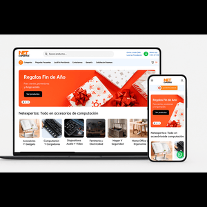
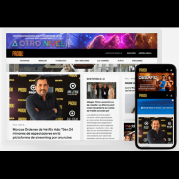
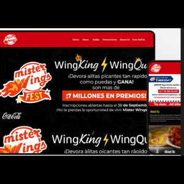

Full Stack Developer with over 12 years of experience in web and mobile solutions, specialized in JavaScript (React.js, React Native, Next.js, Node.js with Express) and PHP (WordPress, Laravel, Prestashop, OpenCart). Focused on delivering scalable, high-performance applications through clean architecture and efficient integrations.
Expert in core development, creation of custom themes and plugins, and performance/security optimization. Experience with advanced WooCommerce setups and integrations with external APIs and third-party services.
Skilled in Eloquent ORM, Blade, Livewire, Inertia.js, migrations, middleware, queues, jobs, and events. Experienced in building REST/GraphQL APIs within modular and maintainable architectures.
Proficient in React.js (hooks, Redux/Zustand, TailwindCSS, Material UI) and React Native for iOS and Android. Experience with push notifications, deep linking, and App Store/Play Store deployment.
Development of REST/GraphQL APIs using Node.js + Express.js, with solid implementations of JWT/OAuth authentication, validation, error handling, and microservice-based structures.
Hands-on experience with MySQL, PostgreSQL, MariaDB, MongoDB, and Redis.
Use of GitHub Copilot, Claude, and ChatGPT to accelerate development workflows. Basic integration with AI APIs such as OpenAI, Hugging Face, and Google AI.
Deployments on AWS, DigitalOcean, and Vercel, using Docker, CI/CD pipelines, and efficient Linux server management.
As a Senior Developer specialized in WordPress, I participated in the development
and optimization of high-traffic digital content platforms.
Key Responsibilities:
Advanced WordPress Development: creation of custom features using hooks, filters,
and shortcodes, adapting the CMS to meet specific business needs.
Dynamic Content Management with ACF: structuring complex content blocks through
advanced custom fields and Flexible Content, making it easier for non-technical teams to edit.
Newsletter Automation: developed an automated newsletter compilation flow using
MJML, including processes for minification, size validation (102 KB), and compatibility
alerts for email clients.
External API Integration: connected with email delivery services, usage analytics,
third-party data gateways, and internal company systems.
Optimization and Scalability: refactored SQL queries, implemented persistent caching,
optimized WordPress queries, and improved load times in a high-traffic environment.
Team Collaboration: worked closely with designers, editors, and marketing teams
to translate business requirements into robust technical solutions.
Technologies and Tools:
Backend: PHP, MySQL, WordPress (Hooks, Filters, ACF, CPTs, Repeater & Flexible Content).
Frontend: JavaScript, React (for dynamic interfaces in internal areas).
Newsletters: MJML, HTML minification, size validations.
DevOps & Version Control: Git, GitLab, staging/production environments.
As a Full Stack Web Developer, I delivered comprehensive web development solutions for various projects, combining expertise in both frontend and backend technologies. My role included everything from initial consultation to final delivery, ensuring high-quality results tailored to client needs.
- Core Skills and Technologies: JavaScript, Node.js, Angular, PHP, React.js, React Native, Git, Digital Marketing, E-commerce Development.
Responsibilities:
- Full Stack Development: Designed and developed robust web applications using a diverse technology stack to meet client specifications and project requirements.
- E-commerce Solutions: Implemented and customized e-commerce platforms, integrated payment gateways, optimized user experience, and ensured secure transactions.
- Digital Marketing: Developed and executed digital marketing strategies to enhance online presence and drive customer engagement.
- Project Management: Managed all phases of development projects, from planning and design to coding and deployment, ensuring timely and successful completion.
- Client Interaction: Collaborated with clients to understand their needs, provided technical advice, and delivered solutions aligned with their business goals.
Led the development of an Android mobile application designed to manage customer shipments. Responsible for the entire design and development process, utilizing Android Native and RESTful services with Node.js.
Responsibilities:
- Application Design: Spearheaded the design of a user-friendly interface for the mobile application to ensure a seamless user experience.
- Development: Developed the application using Android Native to leverage platform-specific features for optimal performance.
- Backend Integration: Implemented RESTful services with Node.js to enable efficient communication between the mobile application and backend systems.
- Project Leadership: Oversaw the project from concept to completion, ensuring adherence to deadlines and quality standards.
Directed the development of a comprehensive e-commerce platform and a mobile application, enhancing the company's digital presence and functionality.
E-commerce Platform: Led the development of a robust e-commerce platform utilizing JavaScript and PHP, focusing on creating a scalable and user-friendly online shopping experience.
Mobile Application: Developed a mobile platform using React Native, integrating it with PHP web services to provide a seamless and interactive user experience across devices.
Contributions:
- System Architecture: Designed and implemented the system architecture for both the web and mobile applications, ensuring integration and performance optimization.
- Feature Development: Implemented key features and functionalities to meet business requirements and enhance user engagement.
- Cross-functional Collaboration: Worked closely with stakeholders and team members to ensure project alignment with business goals and timely delivery.
Oversaw the development and integration of IT solutions across mobile and web platforms at Play Technologies S.A.S. Led a team of six developers, managing project workflows and ensuring high-quality deliverables.
- Team Leadership: Managed and guided a team of six developers, coordinating tasks and optimizing project workflows to meet deadlines and client expectations.
- Client Solutions: Provided end-to-end solutions for clients, collaborating with cross-functional teams to address their needs and deliver tailored results.
- Project Management: Consistently achieved short-term and long-term project goals through effective planning, execution, and monitoring.
- Process Improvement: Actively participated in meetings to develop and implement new practices and methodologies, enhancing overall team efficiency.
- Client Interaction: Engaged with clients via calls, emails, and face-to-face meetings to address their inquiries and provide support throughout the project lifecycle.
Contributed to the development of software solutions at PARQUESOFT, a non-profit organization dedicated to fostering the creation and growth of technology companies. Played a key role in the MinTic Kiosk project, delivering front-end development solutions.
- Project Contribution: Worked on the MinTic Kiosk project, developing user interfaces and ensuring seamless functionality for a government-backed initiative.
- Front-End Development: Implemented responsive and intuitive designs, focusing on user experience and cross-platform compatibility.
- Collaboration: Collaborated with cross-disciplinary teams to meet project milestones and deliver high-quality software solutions.
- Technologies Used: Applied best practices in front-end development, utilizing technologies such as HTML, CSS, JavaScript, and related frameworks to deliver optimal performance.
Led web development projects for a design firm specializing in the betting sector. Developed Thinker Reports, a reporting system successfully sold to industry clients.
- Project Lead: Promoted in November 2012 to oversee project development and delivery.
- Technologies: Worked with PHP, JavaScript, MySQL, and Linux environments.
- System Development: Created a reporting system tailored to betting firms' needs.
- Client Collaboration: Interacted with clients to deliver customized solutions.
Contributed to the development and integration of IT solutions for mobile and web platforms. Focused on designing and building web applications for various client projects.
- Web Development: Designed and developed web applications using PHP, JavaScript, Java, MySQL, and PostgreSQL.
- Cross-Platform Solutions: Worked on projects that integrated both mobile and web platforms, ensuring seamless performance across devices.
- Collaboration: Engaged with development teams to deliver efficient, scalable, and user-friendly web solutions.
As a Systems Engineer, I specialize in designing, developing, and implementing technological solutions to address IT challenges. I focus on system analysis, programming, database management, and network integration to create efficient and secure applications that meet user needs and business requirements

I handled the full implementation of the website using WooCommerce, the Woodmart theme, and Elementor. I developed custom plugins for payment and shipping methods, integrated the WooCommerce API for POS connections, and created plugins for electronic invoicing, Bluexpress, and MercadoPago. Additionally, I worked on improving the site's security and caching using Cloudflare and LiteSpeed.
View Project
A digital magazine-style website built with WordPress for the entertainment and communication industry in Latin America.
I contributed to the development of a custom plugin for newsletters integrated with Mailchimp, ACF, and MJML;
helped create the membership system, implemented dynamic banner management, and worked on template and design improvements.
Stack: WordPress, PHP, ACF, MJML, Mailchimp API, JavaScript, CSS.

Fast-food e-commerce website developed with WordPress and WooCommerce.
I created a custom plugin for address geolocation and online payment integration,
improving the user experience and streamlining the checkout process.
Stack: WordPress, WooCommerce, PHP, JavaScript, Google Maps API, CSS.